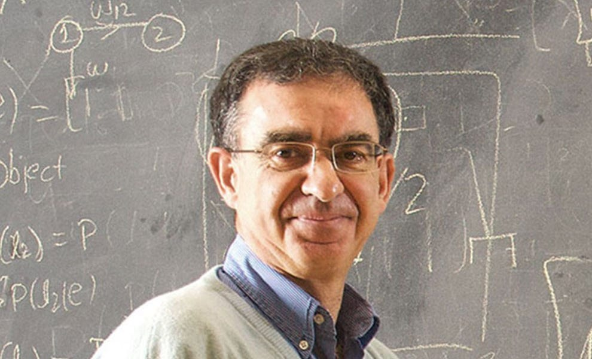
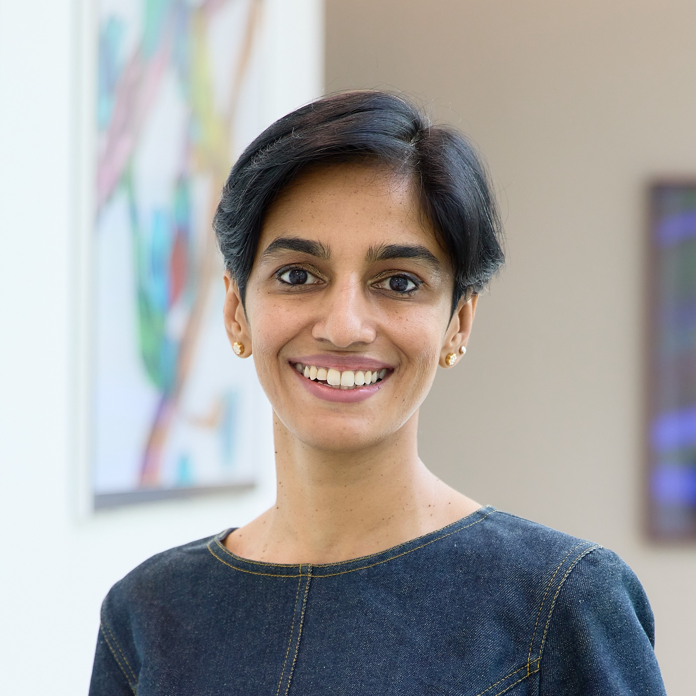
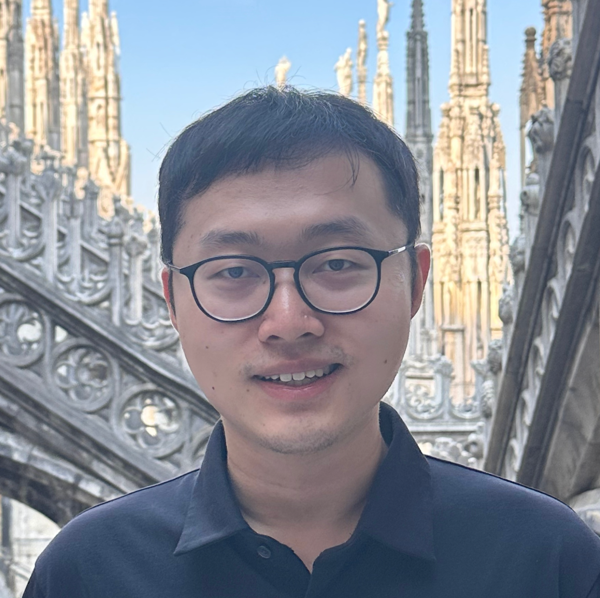

Surya Ganguli
Stanford University

ICLR 2027 Workshop 29/30 April, 2027
Exploring how physical principles can shape learning objectives, illuminate optimization dynamics, and reveal the structure of AI representations.
Modern AI systems are increasingly powerful, yet their objectives, representations, training dynamics, and emergent behaviors remain only partially understood. The Physical Pathways to Understanding AI Mechanisms workshop explores how physical principles can provide mathematical and algorithmic tools for understanding and designing modern machine learning systems.
The workshop treats AI systems as high-dimensional statistical and dynamical systems and explores three complementary pathways: physical principles for learning objectives, learning and generation as dynamical systems, and representation structure and emergent behavior. Energy and free-energy formulations connect learning objectives to probabilistic structure and constraints; stochastic and nonequilibrium dynamics illuminate training and generation; and geometry, symmetry, and collective phenomena help characterize learned representations and changes in model behavior.
Across these pathways, we ask when physical perspectives provide testable predictions, mechanistic explanations, and practical design tools. We welcome approaches that connect explicit assumptions to measurable predictions, test proposed mechanisms through interventions, and examine the scope and limitations of physical descriptions beyond descriptive analogies.
Unlike broad AI-for-science workshops that focus primarily on applying AI to scientific discovery, this workshop studies AI systems themselves as objects of physical analysis. We aim to bring together researchers from machine learning, statistical physics, applied mathematics, computational neuroscience, and related fields to build a shared language for Physics for AI, clarify open problems, and identify principles for interpretable, controllable, and robust AI systems.
The timeline and program below are tentative. The detailed timetable will be announced once the workshop date, room assignment, and contributed presentations are confirmed.
The one-day workshop will include:
We welcome submissions on topics related to Physical Pathways to Understanding AI Mechanisms, including but not limited to:
All seven speakers below have accepted our invitations and confirmed their participation, subject to acceptance of the workshop proposal. Talk titles and abstracts will be announced as the program is finalized.
Stanford University
Yale University

Harvard University

MIT

Harvard University

Recursive Superintelligence Inc.

Bocconi University
Fudan University

The Chinese University of Hong Kong

The Chinese University of Hong Kong
Tufts University

Tsinghua University
For any questions about submissions, sponsorship, invited sessions, or the workshop program, contact the organizing team.